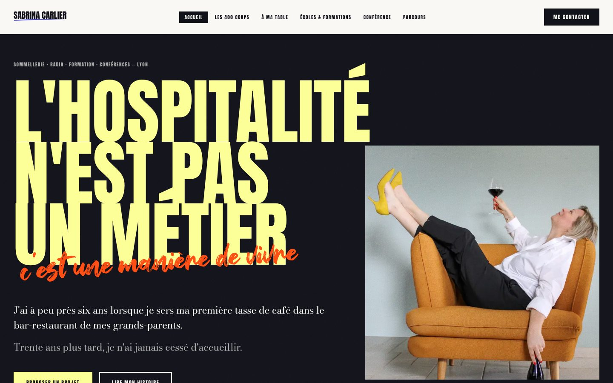
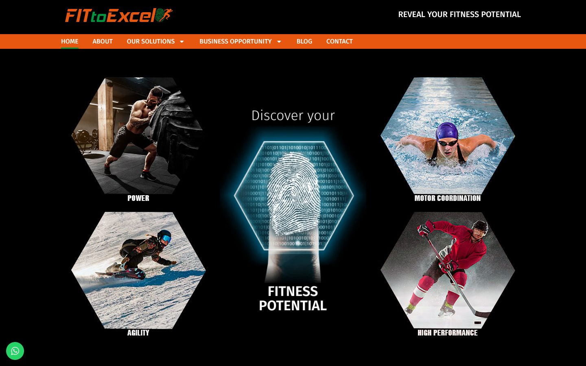

02SaaSWith Elisa
Software for private chefs
Automating one chef's business showed us what every private chef in France is missing. So now we're building it, together.
Three years as a full-stack developer, back when we wrote every line by hand. Today: automations, websites and software, for clients and for people I love.

Elisa is a private chef. I built her website and wired the automations right into it, so she spends her time cooking instead of doing admin.
Visit the site ↗Automating one chef's business showed us what every private chef in France is missing. So now we're building it, together.

A bold, editorial website for a sommelière, radio host and trainer in Lyon. Big type and a lot of personality, like her.
Visit the site ↗
A fitness and tech startup I'm helping my dad launch in Canada. It uses science to show each person their real fitness potential.
Visit the site ↗My first automation client, and where the studio began.
Case study soonWebsites, automations or something in between. Tell me what you're building.